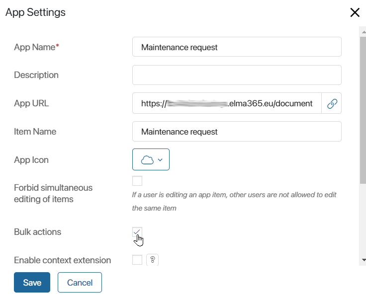
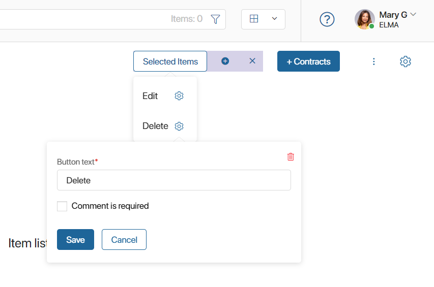
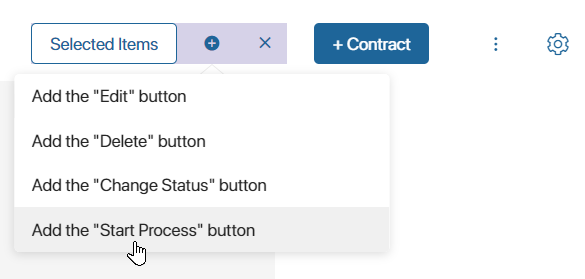
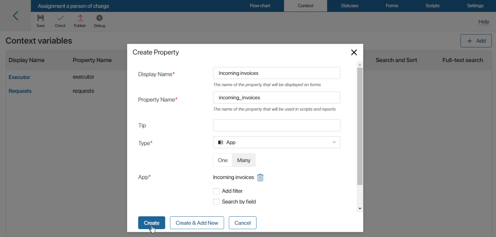
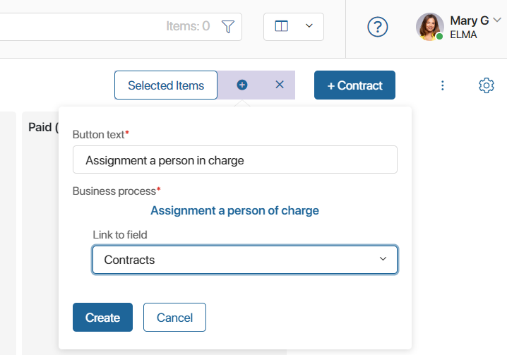

In BRIX apps, you can apply bulk actions to selected items: Edit, Delete, Change Status, Start Business Process.
In this article, we see how to enable the option for users and customize the buttons on the app page.
You can also use scripts with methods to add or delete items and update their fields in batches. Read more about it in the Batch actions with app items in scripts article.
Enable bulk actions
начало внимание
Only users who are members of the Administrators group can enable bulk actions in the app and set up buttons.
конец внимание
Bulk actions with items are enabled separately for each app:
- Click the gear next to the app name and select App Settings.
- Check the Bulk actions box.

- Save the settings.
Customize bulk actions
By default, users will be able to bulk edit, delete, restore, and change the status of items. You can customize the actions or add a button to run a business process. To do this:
- In the top right corner of the app page, click the gear icon.
- Select the Bulk Action Settings option.
- Click Selected Items.
- From the list, select the action you want to change and click the gear next to its name.
- In the opened window, you can rename the action, remove it from the list, and change other settings.
- To restore a deleted action or add the Start Process button next to the Selected Items, click on the icon.

There are additional settings for editing and starting a business process actions.
Set up bulk edit
To change the property values of several items, you need to configure the bulk editing form of the app. The fields that will be available for editing are selected on this form. Read more about it in the Bulk edit tab article.
Set up bulk process start
Only a process whose context includes a field of the App (Many) type can be bound to the Start Process bulk action button. It must be associated with the app for which you are configuring the bulk action. This field will store the items selected by the user to start the process.
For example, so that you can bind the Assignment of a person in charge process to the Incoming invoices app, you need to create a new property in the context of this process. Specify the property type App, select the Many option, and in the App field specify Incoming invoices.

In the process of assigning a responsible person, you can also automatically change the statuses of requests, if they are configured in the app. To do this, use the Manage Status block.
To add an action and customize the process launch:
- In the Bulk Action Settings window, select the Add the “Start Process” button option.
- Fill in the fields:
- Button text*. The name of the start process button in the list of available actions.
- Business process*. Select the process that will be started when you click on the bulk action button.
- Link to field. Specify the context variable of the process, to which all selected items will be written.

- Click Create.
Note that with all the selected items, only one process instance is started. The items are written to the process context variable that is specified in the button settings.
When using a bulk action, you can start a separate process instance for each marked item. To do this, a subprocess must be used within the selected business process, and a loop must be created using an exclusive gateway and a script added to the gateway settings.
Found a typo? Select it and press Ctrl+Enter to send us feedback